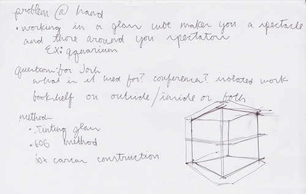
Gathering thoughts and speculating different approaches.
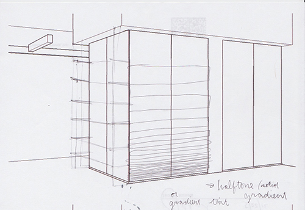
Building a rough CAD layout allows me to print templates for sketching.
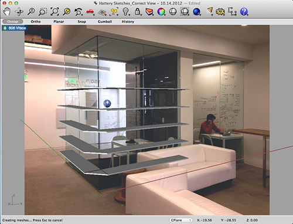
Preliminary wrap-around sketch.
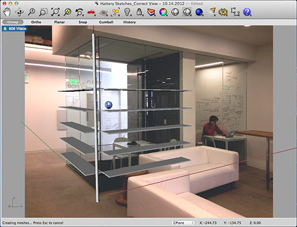
Another wrap-around thought.
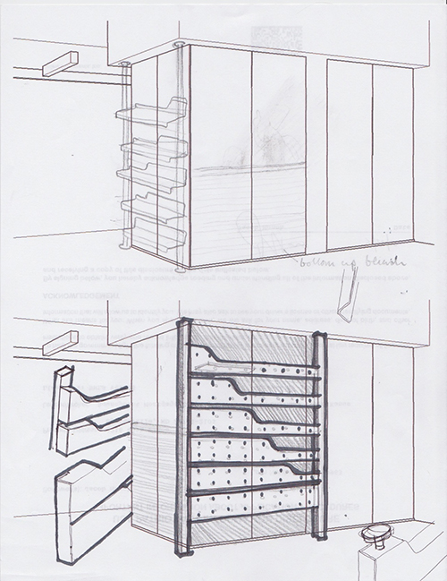
Thinking of methods for creating some privacy with the shelves.
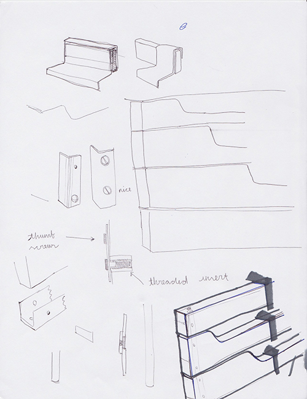
Developing installation methods.

Installation examination reveals design challenges.
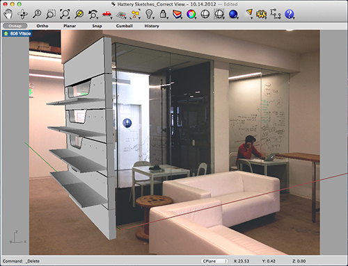
Going to the 3D model to examine potential in higher resolution. Results are unsatisfactory.
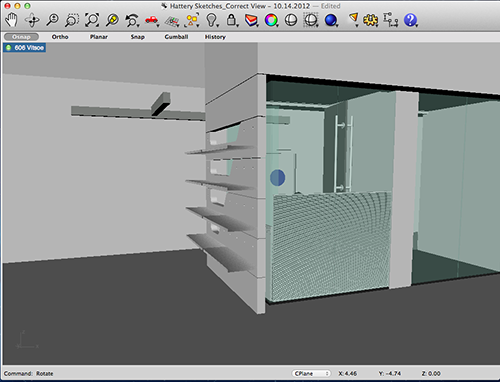
Viewing developments in another way.
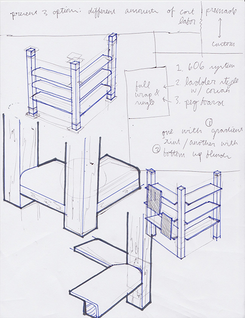
Back to the drawing board. Imagining a different approach that directly references ceiling joists.
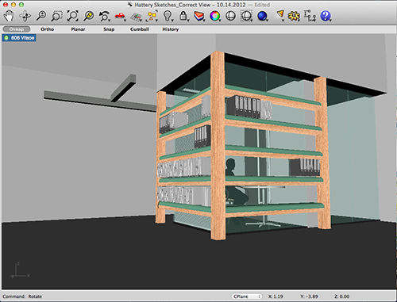
Back to the computer. The results are decent but not exciting.
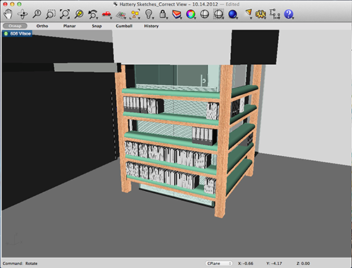
From another view.
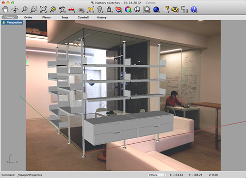
Examining the completely prefabricated solution postulated in the initial notes.
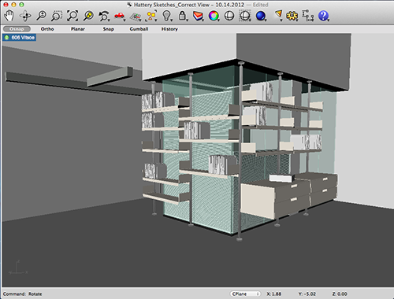
Great but inappropriately sterile.
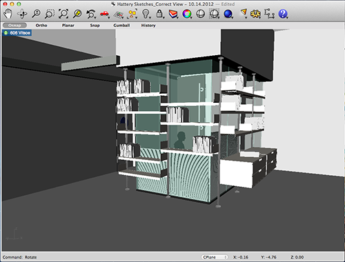
With the blinds down.
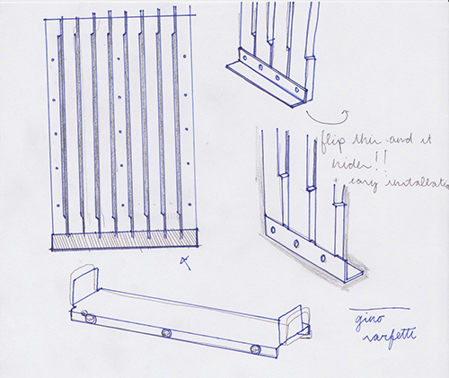
Taking the better aspects from earlier designs to arrive at an appropriate solution. See 'proposal'.
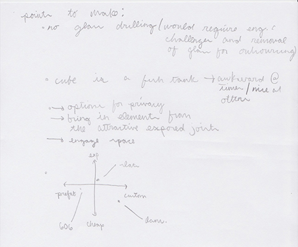
Notes on presenting the work.
Copyright 2012